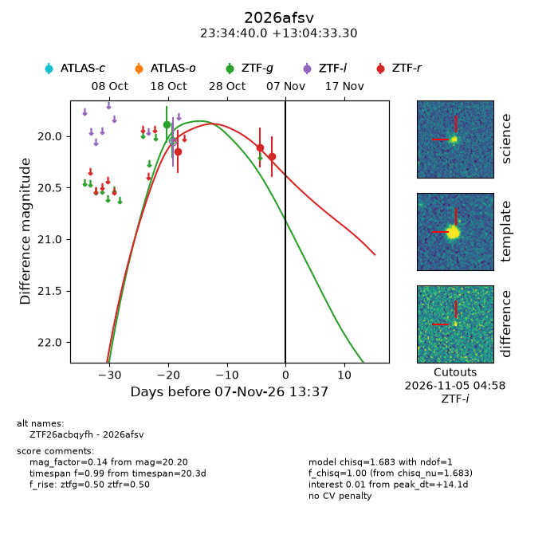
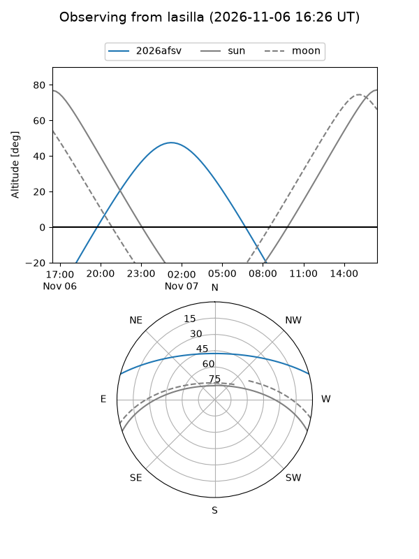
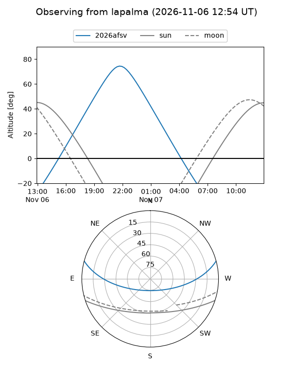
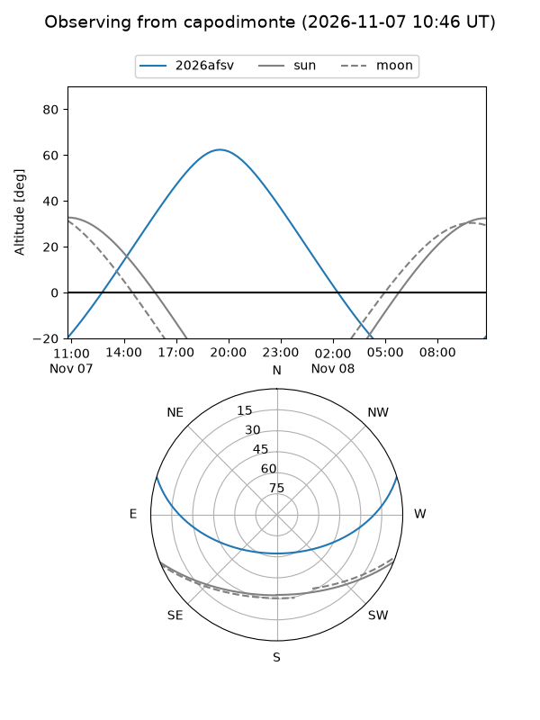
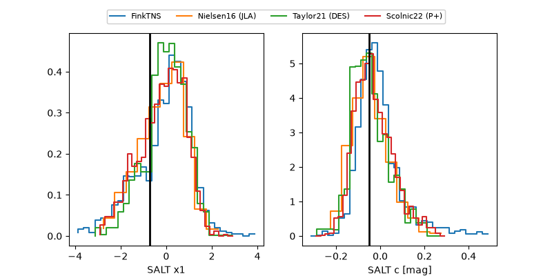

2026afsv
Target 2026afsv at 2026-11-07 13:39
Aliases and brokers:
FINK-ZTF: ztf.fink-portal.org/ZTF26acbqyfh
Lasair-ZTF: lasair-ztf.lsst.ac.uk/objects/ZTF26acbqyfh
ALeRCE-ZTF: alerce.online/object/ZTF26acbqyfh
YSE-PZ: ziggy.ucolick.org/yse/transient_detail/2026afsv
TNS name: wis-tns.org/object/2026afsv
Direct TNS query: direct search
alt names
ZTF26acbqyfh (ztf,fink_ztf)
2026afsv (tns,yse)
Coordinates:
equatorial (ra, dec) = 353.6665,+13.07592
equatorial (HMS+DMS) = 23:34:39.95,+13:04:33.30
galactic (l, b) = (95.6468,-45.68936)
Flags:
peak dt: +14.1
Photometry:
last ztfg=19.89, ztfr=20.20
1 ztfg, 3 ztfr detections
Lightcurve

Visibility



Additional plots
